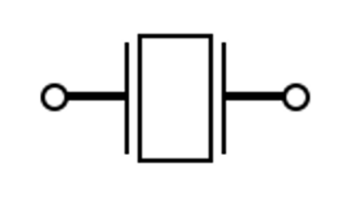
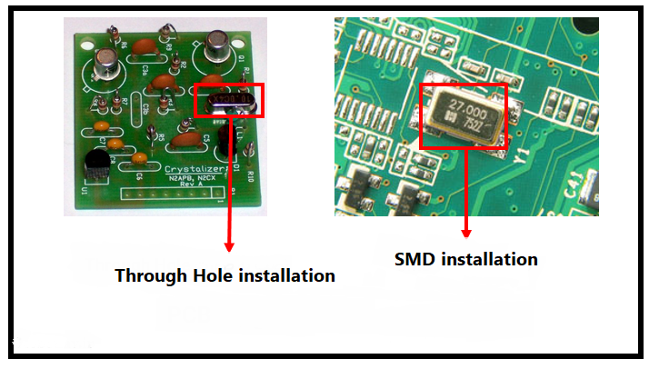

Electronic Crystal#
Author : Mahdy Albaji
contact : mahdyalbajieng@gmail.com
Layout :#
1- Introduction#
2- Crystal schematics in circuits#
3- Appearance of the crystal#
4- Where is crystal used?#
5- The type of installation of crystals in the circuit#
6- Crystal performance#
7- Electronic crystal manufacturing technology#
8- Principles of crystal operation#
9- Features and benefits of electronic crystal#
10- Crystal unit of measure#
11- Conclusion#
12- References#
Introduction#
Electronic crystal: the main precision element in electronic systems. The electronic crystal is made of a mineral substance in nature calledquartz crystal, which when voltage is given to it (according to the law of resonance and pressure effect in this part) vibrates with a specific frequency and opinion It converts electrical to mechanical oscillations within itself, Due to the fact that these vibrations or deformations are very accurate, we will observe the electrical signal output with a very accurate frequency.
The electronic crystal is one of the vital elements in the modern electronic world. This element plays a very important role, especially in digital and communication devices, such as computers, digital watches, and telecommunication equipment. An electronic crystal is usually made of the mineral quartz crystal, which has unique properties such as piezoelectricity. This property allows the crystal to produce precise and stable oscillations under the influence of voltage.

Figure(1): Electronic crystal
Crystal schematics in circuits#
Generally, in electronic circuits, they are displayed as X or XTAL or Y with the following symbol.

Figure(2): Schematic of a crystal in an electric circuit
Appearance of the crystal#
The appearance of the crystal is divided into two categories:
DIP
SMD
Its DIP model mostly works with working frequencies of kilohertz. And generally, the SMD model has high frequencies in the range of megahertz.
Figure(3): SMD crystal
Figure(4): DIP crystal
Where is crystal used?#
Generally, it is used in places where high accuracy is required, such as these digital watches. If the crystal used in these watches is not accurate, everything will be messed up, and after a while, the watch will not be accurate at all, and there may be a difference of one or two hours. We have time to give a lot.
Figure(5): Use of crystal in watch
The type of installation of crystals in the circuit#
These parts are installed in circuits in two ways:
1- The first type of installation is through the base, which is placed in the holes we made in the printed circuit board or PCB
2- The second type of installation is the surface installation which is soldered on the PCB surface
The image of these two modes is given in the following figure:

Figure(6): How to install the crystal on the PCB
Crystal performance#
In general, a crystal is an electronic component whose task is to produce an electrical signal with a very precise frequency.
It is practical and necessary in most electronic boards that have microcontrollers (for example, in industrial devices such as inverters). In general, every microcontroller needs a clock source to work. The clock determines how fast the processor executes instructions, the serial communication exchange rate, the time required to convert from analog to digital, and much more.
reminder :#
(Clock Signal) : In electronics, and especially in synchronous logic circuits, the clock signal (in English: clock signal), clock pulse, or clock, is a signal that regularly oscillates between two states (High and Low), and is used to coordinate the operation of circuit parts. Digital is used.
The clock signal acts like the heartbeat of the circuit and coordinates the operation of the circuit parts. This signal is produced by the clock generator.
The most common waveform of the clock signal is a square wave with 50% duty cycle and constant frequency. Circuits that use a clock signal can be activated on a rising edge, a falling edge, or both.
Therefore, this part is known as the clock pulse and it is used to produce a specific oscillation in the circuit to cause coordination between the parts in the circuit. The crystal is a kind of circuit heart or time circuit and all operations are done according to this time.
Electronic crystals act as clock sources in electronic circuits by generating very precise frequency oscillations. These clocks regulate the timing of operations in processors and microcontrollers and play a vital role in coordination between different parts of the circuit. Without an accurate clock source, the coordinated and correct operation of a digital circuit would be impossible.
For example : in microcontrollers, the clock generated by the crystal determines the execution rate of instructions and data processing operations. These clocks directly affect operations such as multiplication, division, and data movement in memory. Also, in serial communication protocols such as UART, I2C, and SPI, the clock frequency plays a vital role in setting the rate of data exchange and synchronization between different devices.
Electronic crystal manufacturing technology#
Electronic crystals come in two main forms :
1- DIP (Dual Inline Package)
2- SMD (Surface-Mount Device)
DIP crystals are mainly used at lower frequencies, in the kHz range, and are used in laboratory and development circuits due to their larger size and easier installation.
In contrast , SMD crystals operating at MHz frequencies are more commonly used in commercial and consumer products due to their small size and surface mountability.
Principles of crystal operation#
The principle of operation of electronic crystals is based on the piezoelectric effect.
reminder :#
The piezoelectric effect is the ability of some materials to convert mechanical energy into electrical energy and to convert electrical energy into mechanical energy. This work was discovered by the Curie brothers, Pierre and Jacques Curie, in the 1880s. Materials that show this phenomenon are called piezoelectric materials.
When a voltage is applied to a quartz crystal, the material vibrates and produces mechanical oscillations. These mechanical oscillations are then converted into electrical oscillations that have a precise and stable frequency. This frequency is precisely controlled by the dimensions and shape of the crystal. For this reason, each crystal is designed and manufactured for a specific frequency.
Features and benefits of electronic crystal#
One of the most important features of electronic crystals is their high accuracy. This precision can be in the parts per million (PPM) range.
In addition, electronic crystals have good temperature stability and temperature changes have little effect on their oscillation frequency. These characteristics make electronic crystals an ideal choice for use in sensitive and precise systems.
Challenges and developments#
With the advancement of technology and the need for electronic systems with greater accuracy and stability, research and development in the field of electronic crystals has also increased. One of the existing challenges is to produce crystals with very high frequencies and long-term stability in different environmental conditions. For this reason, engineers and researchers are looking for new materials and techniques that can improve the performance of electronic crystals.
Crystal unit of measure#
Their unit is in hertz, which is usually in megahertz or kilohertz. The same quartz crystal material can be used to generate voltage.
As said The DIP model mostly works with working frequencies of kilohertz. And the SMD model has high frequencies in the range of megahertz.
Conclusion#
As accurate clock sources, electronic crystals play a vital role in the correct and coordinated operation of electronic circuits. Using the unique properties of quartz crystal, these elements produce electrical oscillations with a precise and stable frequency, which is necessary for timing and coordination of operations in digital devices.
Due to the continuous advances in this field, it is expected that electronic crystals will continue to be used as one of the key components in the design and construction of modern electronic circuits.
References#
https://prd.derakhsheshco.com/کریستال-crystal-چیست؟/
https://robouav.org/کریستال-چیست-و-چه-کاربردی-دارد؟/
https://dr-board.com/what-is-and-what-is-the-use-of-crystal-in-electronics/